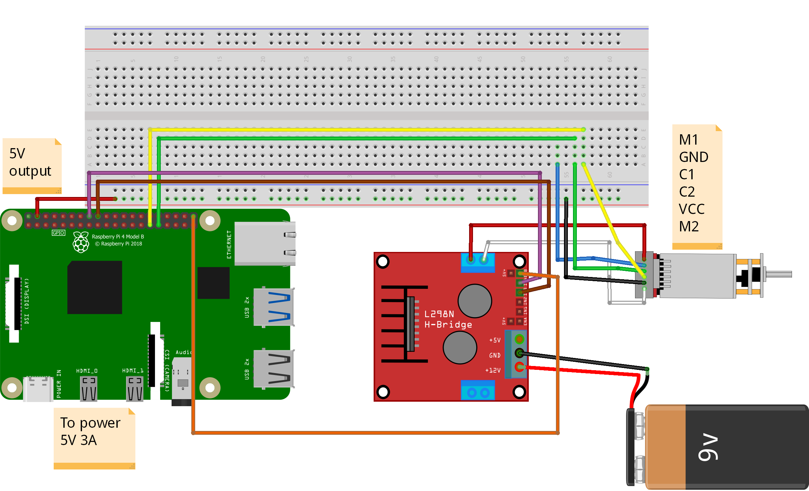
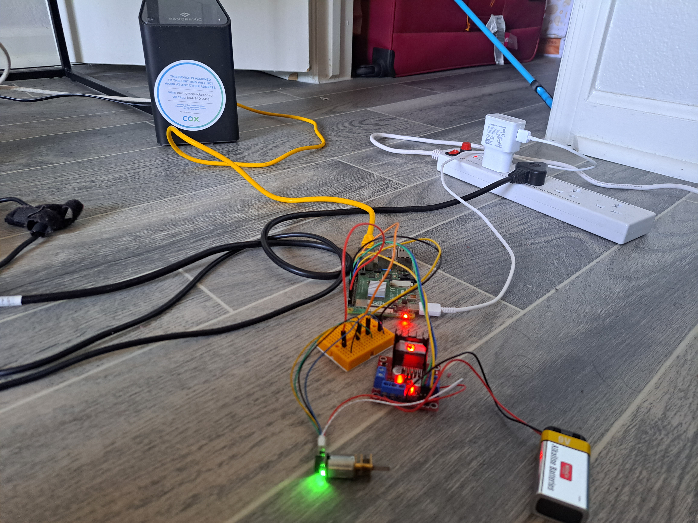
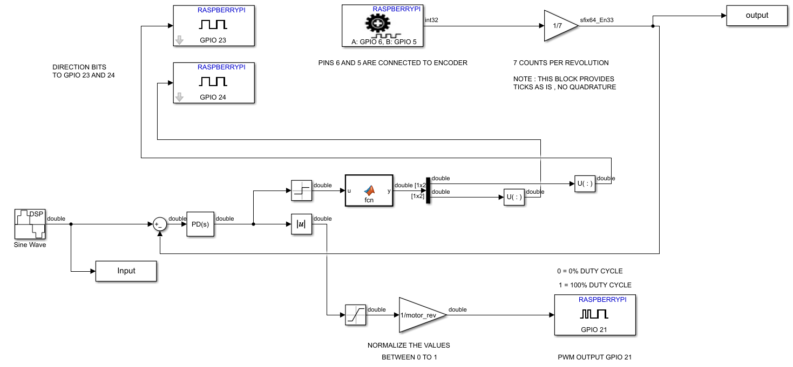
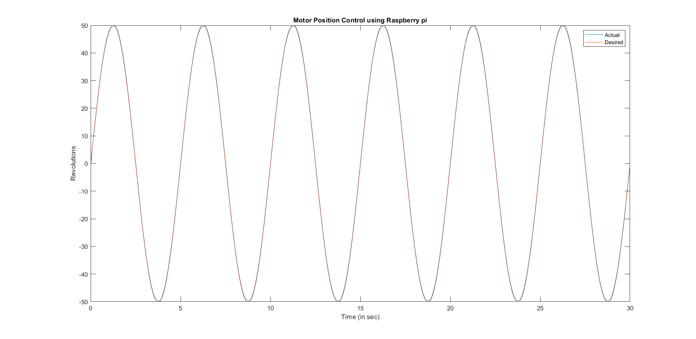
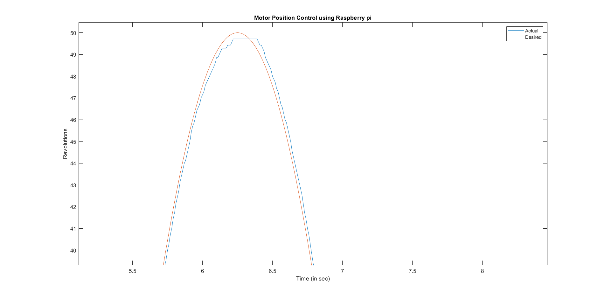

Position Control of a DC Motor with MATLAB using a Raspberry pi
Objective
- To develop a PD controller for a motor to precisely follow the position.
- The input is a sine wave and the objective is for the motor to follow the sine wave position signal.
- Run the model in real time using WiFi.
Circuit Diagram

| Motors Pins |
GPIO pins |
| C1 (Encoder Pulse A) |
6 |
| C2 (Encoder Pulse B) |
5 |
| IN1 |
23 |
| IN2 |
24 |
| ENA (PWM PIN) |
21 |
Setup

Simulink Model

- A discrete sine wave is give as input to the motors.
- The input signal is split into two parts, "magnitude" and "direction".
- The "direction" is used to control the direction of rotation of the motor at GPIO's 23 and 24.
- The "magnitude" is sent a PWM signal to the motor driver at GPIO 21.
- The simulink model is a closed loop control system with a PD controller receiving feedback from the motor encoder at GPIO's 5 and 6.
- Data is logged for the input sine wave and the output from the encoder for plotting and analysis.
Output Graph


Working Video